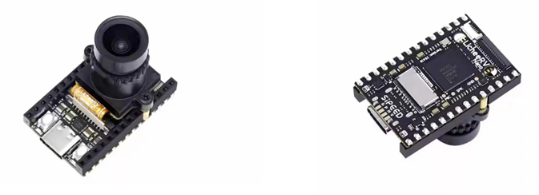

让安全监测更智能
端-边-云协同，为中小工厂提供高性价比的AI安全方案
0%
安全帽识别准确率
0s
违规告警延迟
0路
并发摄像头
7×24h
稳定运行
边缘AI · 离线可用
温湿度 + AI视觉 双模态融合监测
首次将环境参数与人员行为联合判定，误报率降低40%。MaixCAM边缘设备内置轻量大模型，断网仍可独立推理、语音播报。
- 离线大模型运行 · 保密车间首选
- 双角色多工厂权限 · 连锁统一管理
- 一键生成EDA报告 · 满足合规
SUCCESS STORIES
精选案例与动态
真实场景验证 · 效果可量化

精选案例
恩科电子科技：安全合规快速落地
车间人员密集、温湿度敏感，预算有限、网络不稳定。部署2套单路监测设备，1天完成部署，不停工、免布线。
96.2%
识别准确率
≤0.6s
报警延迟
67%
违规下降
7天
离线运行
电子组装行业 · 2026-03
查看详情
6300万+
中小制造企业
80%+
风险降低率
1天
快速部署
<370元
单点位成本